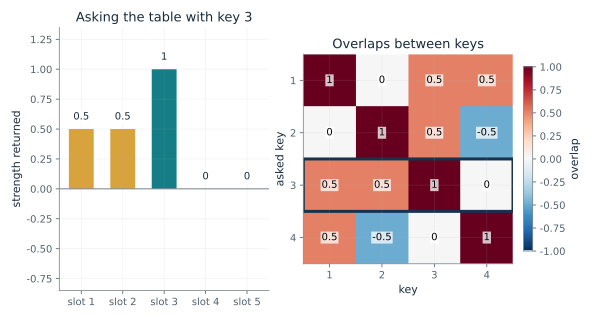
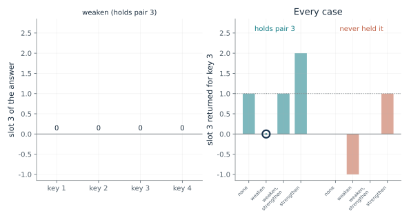
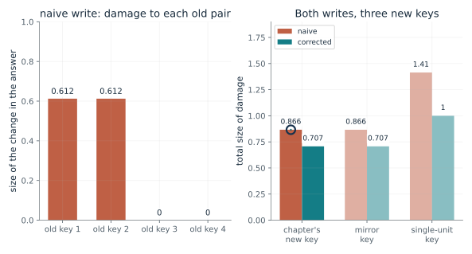
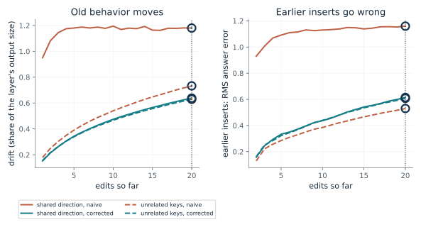
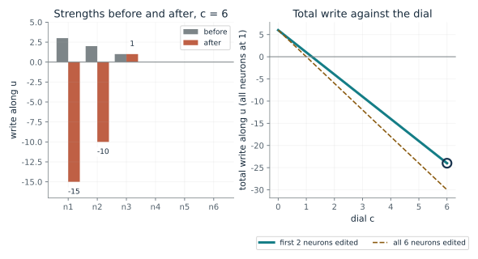
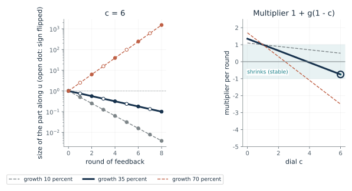
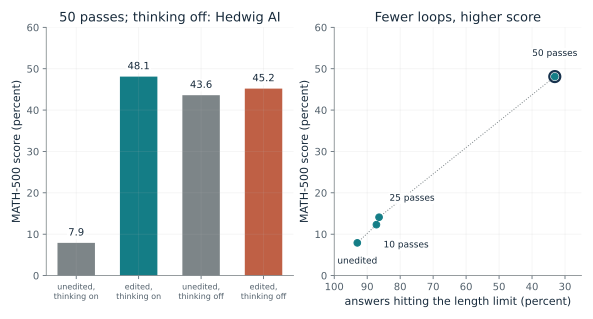

Why does asking the table return more than one answer?
From Chapter 28, Overlapping keys leave ghosts in each other's answers
If every pair is stored by adding a product, what comes back when one key is asked?
Writing a pair adds the product of the activity at each connection's two ends. Asking the table with a key multiplies each stored row by that key and adds. Each stored pair contributes its answer, scaled by how much its key overlaps the asked key. Overlap with itself is 1, so the right answer comes back at full strength, and any overlap with other keys leaves a faint copy of their answers.
Predict first: Ask the overlapping table with key 3. Predict how many answer slots light up besides slot 3 and how strong they are.

Key asked: 3 · Key set: overlapping
What happens: Key 3 returns its own answer at 1 and two ghosts at one half, in slots 1 and 2, because it overlaps keys 1 and 2 by one half and key 4 by zero. The right answer still wins, by 1 against one half.
With overlapping keys, key 3 returns its own answer at 1 and ghosts: slot 1 gets 0.5, slot 2 gets 0.5. Each ghost equals the overlap of key 3 with that slot's key.
- Right answer
- 1
- Ghost slots
- 2
- Largest ghost
- 0.5
- Right answer minus largest ghost
- 0.5
A table that stores pairs by adding products is clean only when keys are at right angles. Overlap is where edits and old memories interfere.
The storage rule echoes Hebb's 1949 postulate and Anderson's and Kohonen's 1972 memories. Reading table entries as synapse strengths is the book's analogy, and no brain here is measured.
The table is a specification: this is what an outer-product table returns, by arithmetic. Whether a trained layer behaves like it is a modeling claim.
Show the calculation
W k3 = v3 + sum of v_i (k_i . k3) over the other keys; here k1.k3 = 0.5, k2.k3 = 0.5, k4.k3 = 0. Own overlap k.k = 1.
The equations and symbols
- k_p
- the key of pair p: a list of input activity, here four numbers of length 1
- v_p
- the value of pair p: a list of output activity, here five slots with a one in slot p
- W
- the table of connection strengths, five rows by four columns
- k_i . k_j
- overlap of two keys: multiply entry by entry, then add
A linear table with unit-length keys and exactly one-hot answers. A trained layer is not this exact; the chapter reads a layer as a key-value table as a working model.
Check your understanding: Ask the overlapping table with key 1. Which slots get ghosts, and how strong?
Book source: Chapter 28, Overlapping keys leave ghosts in each other's answers. Illustration C28-D01. Constructed example. Book formula and the chapter's constructed four keys, which are exact fractions. The overlapping set is the chapter's Figure 28.1. The right-angle set is the companion's own, built so every pair of keys has overlap 0.
Can a connection weakened by one step be restored by another?
From Chapter 28, Weakening and then strengthening one set of connections switched a rat's fear response off and on
What do a weakening step and a strengthening step do to a table, and what does the toy miss that the rats showed?
Subtracting pair 3's product removes its answer for key 3 and also removes the ghosts it left for keys 1 and 2. Adding the same product back restores the table exactly. On a table that never held the pair, the same add writes the pair outright. That is the point where the toy and the rats differ.
Predict first: Subtract pair 3's product from the table, then add it back. Predict whether the table equals the original, and what the same add does to a table that never held pair 3.

Operation: weaken · Table: holds pair 3
What happens: The table returns to the original exactly, and slot 3 for key 3 is 1 again. Switch the table to 'never held pair 3' and choose 'strengthen': the toy writes the pair from nothing. In the rats, fast bursts alone wrote nothing.
Operation 'weaken' on a table that holds pair 3 returns 0 in slot 3 for key 3 and 0 for key 1. The table does not equal its starting table.
- Slot 3 for key 3
- 0
- Slot 3 ghost for key 1
- 0
- Table equals the starting table
- no
- Pair 3 answer is
- gone
Restoring a weakened response with no new teaching shows something of the pair survived. The toy matches that shape but not the control, so it is a shape and not an explanation.
Weakening the connections removed the response and strengthening them restored it in the same 12 rats. The authors write the memory was 'inactivated and reactivated,' not erased. Untrained rats showed nothing after fast bursts, and rats whose fear had faded did not get it back. Nothing says a memory in a person can be switched this way.
The toy is a specification of what subtracting and adding an outer product does. Nothing in it stores a memory of what was subtracted; the restoring step must be supplied.
Show the calculation
One step adds eta v3 k3^T with eta = -1 to weaken and +1 to strengthen. Slot 3 for key j is eta (k3 . kj) plus whatever was stored: key 3 gives 0, key 1 gives 0, key 2 gives 0, key 4 gives 0.
The equations and symbols
- Delta W
- what one step adds to the table
- eta
- step size; negative subtracts, as in long-term depression, and positive adds, as in long-term potentiation
- v, k
- here pair 3's value and key
Linear table; the weakening product is exactly the one that stored pair 3. A real synapse changes by chemistry over minutes to hours, and the chapter notes the behaving rats were not measured at the synapse.
Check your understanding: After weakening only, what do keys 1 and 2 return in slot 3?
Book source: Chapter 28, Weakening and then strengthening one set of connections switched a rat's fear response off and on. Illustration C28-D02. Constructed example. The toy is the chapter's weaken-and-restore build on its constructed table (exact arithmetic). The rat study is the chapter's account of Nabavi and colleagues (2014): 12 rats, weakening removed the response and strengthening brought it back with no new shock.
How much do old pairs feel one new fact?
From Chapter 28, A new fact can be written with one outer product, sized to disturb the old ones as little as possible
When one outer product writes a new pair exactly, how much do the old pairs change, and can a better choice of z shrink it?
The leftover v* - W k* is what the table gets wrong for the new key. Writing it along z fixes the new key exactly. An old key feels the write in proportion to its overlap with z. The naive z is the new key, so old keys that overlap it feel it. The corrected z weighs directions by how much the stored keys use them and writes mostly along directions they rarely use.
Predict first: Both writes make the new key return the new answer exactly. Predict whether the corrected write leaves the old pairs untouched, and which does less total damage.

Write: naive · New key: 1
What happens: The corrected write spreads smaller changes over three old keys, 0.408 each, for a total of 0.707 against 0.866 for the naive write, about 18 percent less. The chapter reports that 0.707 is the smallest any exact update can reach on this table.
Both writes make the new key return slot 5 at exactly 1. For the chapter's new key the naive write damages old pairs by 0.866 in total and the corrected write by 0.707, touching 2 old keys in the selected case.
- Total damage to old pairs
- 0.866
- Largest single-key change
- 0.612
- Old keys touched
- 2
- New key returns slot 5 at
- 1
A new fact written exactly can still disturb old ones. Measuring what an edit does to what it was not meant to touch is a separate test from checking that the edit worked.
No brain study measured damage to old pairs this way, and there is no evidence a brain computes an update like this one.
In the chapter's account the edit was reported to answer the edited fact 99.8 percent of the time, and 88.1 percent when it was reworded, with unrelated-fact accuracy at 24.2 percent before and after. That aggregate does not show every answer stayed the same.
Show the calculation
Leftover v* - W k* = [-0.5, -0.5, 0.0, 0.0, 1.0]. Change for old key j is (leftover) times (z . kj) / (z . k*). Total damage = square root of the sum of squared changes = 0.866.
The equations and symbols
- k*, v*
- the new key and the new value
- W k*
- what the table says for the new key now
- z
- the direction of the write: it decides which old keys feel it
- C
- the table of average products of the keys the layer normally sees; here the sum of k k-transpose over the four stored keys
A linear table that already stores the four old pairs exactly, and C taken as exactly the stored keys. The chapter says a trained network does not store old pairs this exactly and that ROME estimates C from 100,000 Wikipedia positions.
Check your understanding: In the naive write for the chapter's new key, the leftover is (-0.5, -0.5, 0, 0, 1). Which old keys feel it, and by how much each?
Book source: Chapter 28, A new fact can be written with one outer product, sized to disturb the old ones as little as possible. Illustration C28-D03. Constructed example. Book formula (the write of Meng and colleagues, as the chapter presents it) on the chapter's constructed table. The chapter's new key gives 0.866 and 0.707; the other two keys are the companion's own additions. The language model is not simulated.
What happens to a layer after many edits?
From Chapter 28, The build: three ways to edit a small table
If the insert is repeated 20 times, how far does the layer drift, and do the earlier inserts survive?
Each edit adds a rank-one change that fixes the new key and nudges whatever overlaps it. Keys that share a direction all feel each edit, so drift is large and the corrected write helps by writing away from that direction. Unrelated keys feel little, so the correction helps less. In 6 dimensions there is little room: earlier inserts are pushed out sooner, and in this run the correction did not lower drift after 20 edits (about 1.5 corrected against 1.3 naive).
Predict first: With keys that share a direction, the corrected write cuts drift a lot after one edit. Predict whether it still helps after 20, and whether unrelated keys gain from the correction.

Edits so far: 20 · Dimensions: 64
What happens: After 20 edits in 64 dimensions, drift is about 1.18 for the naive write and 0.64 for the corrected write with shared keys. With unrelated keys the two writes are close (0.73 against 0.63). Every line ends higher than it starts.
After 20 edits in 64 dimensions (mean of 50 seeded runs) drift with keys sharing a direction is 1.18 for the naive write and 0.638 corrected. With unrelated keys it is 0.733 and 0.629. No line stays near zero.
- Drift, shared keys, naive
- 1.18
- Drift, shared keys, corrected
- 0.638
- Earlier-insert error, shared keys, naive
- 1.16
- Earlier-insert error, shared keys, corrected
- 0.615
A single edit that passes its own test says little about the layer after a hundred. Whether old edits survive is its own question.
No brain study here repeated an edit this way.
Gupta and colleagues, as the chapter reports, found ROME edits began to fail after as few as 100 or as many as 1,000 edits on GPT-J, and a few single edits disabled the model. This toy shows how drift can accumulate, not that it explains those results.
Show the calculation
Each edit is W' = W + (v - W k) z^T / (z^T k) with z = k (naive) or z = C^-1 k (corrected, C fixed from 256 sample keys). Drift = |(W - W0) X| / |W0 X| over the same 256 keys X. Error = root mean square of |W k - v| over earlier inserts.
The equations and symbols
- W_0
- the layer before any edit
- X
- a pool of 256 typical keys
- drift
- how far the layer's output on typical keys has moved, as a share of its original size
- error
- root mean square distance of earlier inserts' answers from what they should be
A random starting layer, unit random keys and values, C estimated once from the 256-key pool and then held fixed. A simulation is a computation, not a measurement of any language model. The chapter's own caveat applies: edits outnumbering the dimensions cannot all be kept.
Check your understanding: In 6 dimensions, how many unit keys can a linear table in principle store exactly if the keys are independent?
Book source: Chapter 28, The build: three ways to edit a small table. Illustration C28-D04. Simulation. A simulation: the companion's own seeded runs (seeds 1000 to 1049, mean of 50) of the chapter's repeated insert. The chapter's 'shared direction' and 'unrelated' key settings are described in words and the exact code is not in the chapter, so the numbers here are close to but not equal to the chapter's (for example, the chapter reports drift 0.92 and 0.16 after one edit with shared keys; this run gives about 0.95 and 0.15).
What does subtracting a direction do at different strengths?
From Chapter 28, Subtracting one direction made the repetition rarer, using a stronger setting than plain removal
How does the dial c in the Astra-style edit change what a layer writes along a chosen direction?
Each column of the table holds what one neuron writes. The row u-transpose times W says how strongly each column writes along u. The edit scales that row by one minus c in the chosen columns and leaves the rest alone. The change is one outer product, so it has rank at most one.
Predict first: Pick the first two neurons and c = 6. Predict the new strengths and say whether the direction is removed.

Dial c: 6 · Neurons edited (first n): 2
What happens: The strengths become (-15, -10, 1, 0, 0, 0). The write along u is not removed: it is reversed and made five times larger in the two chosen columns. Setting c = 1 gives (0, 0, 1, 0, 0, 0).
At c = 6 the chosen columns' write along u is multiplied by -5, so the strengths become (-15, -10, 1, 0, 0, 0). The total write is -24, against 6 before.
- Multiplier on chosen columns
- -5
- Strengths after
- (-15, -10, 1, 0, 0, 0)
- Total write along u
- -24
'Subtracted that direction' can mean very different edits. Reading the number that sets the strength is part of reading the result.
None. No brain study applied a rule like this.
A specification: this is what the formula does to a table. Whether the reversal helped is not settled for the final edit.
Show the calculation
W' = W - c u (m times (u^T W)). Chosen columns: 1 - 6 = -5 times their old strength (3, 2, 1 where chosen). Unchosen columns keep theirs. Sum = -24. The change is one outer product, so its rank is 1.
The equations and symbols
- u
- a direction of length 1 in the layer's running list of numbers
- u^T W
- how strongly each column writes along u
- m
- ones and zeros that pick which columns are edited
- c
- the dial: 1 removes the write along u, 2 flips its sign, 6 reverses it and makes it five times larger
The direction has length 1 and the activity is one for each neuron. The chapter states that Astra chose c = 6 by trial on practice problems and that the final edit was never compared with c = 1.
Check your understanding: With all six neurons edited at c = 1 and activity one each, what is the total write along u?
Book source: Chapter 28, Subtracting one direction made the repetition rarer, using a stronger setting than plain removal. Illustration C28-D05. Constructed example. The chapter's constructed six-neuron example (strengths 3, 2, 1, 0, 0, 0) and its formula. The authors' logs give c = 6 on 64 columns of two tables; plain removal (c = 1) was published earlier by Arditi and colleagues. The layer here has no language in it.
Can overshoot calm one loop and break another?
From Chapter 28, The build: three ways to edit a small table
If a layer's output is fed back as input, what does the dial do to a part that grows each round?
The edit scales the growth of the part along u by one minus c. With c = 1 the growth is cancelled, so the multiplier is 1. With c larger than 1 the growth becomes negative, and the multiplier is below 1 and can drop below -1, when the part blows up while flipping sign. The multiplier is stable only while it lies between -1 and 1.
Predict first: At c = 6, predict what happens to a part that grows 35 percent per round, then to one that grows 70 percent.

Dial c: 6 · Growth per round of the unedited part: 0.35
What happens: At 35 percent growth the multiplier is -0.75, so the part flips sign each round and shrinks toward zero. Change growth to 0.7 and it becomes -2.5: the part swings in sign and grows. Plain removal (c = 1) holds the part at 1 in both.
With growth 35 percent per round and dial c = 6, the multiplier is -0.75, so the part along u shrinks and flips sign each round. After 8 rounds it is 0.1.
- Multiplier per round
- -0.75
- Part along u after 8 rounds
- 0.1
- Behavior
- shrinks and flips sign each round
A stronger edit than plain removal is not simply 'more removal.' Its effect depends on a number the editor did not choose.
A specification of what repeated multiplication does. It does not show how the real model behaves.
Show the calculation
Multiplier = 1 + g(1 - c) = 1 + 0.35 x (1 - 6) = -0.75. After 8 rounds: -0.75^8 = 0.1.
The equations and symbols
- g
- growth per round of the unedited part along u (0.35 means 35 percent)
- c
- the dial of the direction edit
- m
- the multiplier the part along u gets each round after the edit
- s_t
- the size of the part along u after t rounds
The whole signal along u is fed back and multiplied by one factor each round. This is a stand-in for a model reading what it just wrote, not a model of one.
Check your understanding: For growth 35 percent, what is the largest c that still gives a multiplier above -1?
Book source: Chapter 28, The build: three ways to edit a small table. Illustration C28-D06. Constructed example. The chapter's constructed feedback example: growth 35 percent per round gives -0.75 at c = 6, and growth 70 percent gives -2.5. The 10 percent growth is the companion's addition, and the toy cannot say which case describes Qwen.
How much of a 40-point gain is new skill?
From Chapter 28, Subtracting one direction made the repetition rarer, using a stronger setting than plain removal
The edited small model rose from 7.9 to 48.1 percent on MATH-500. What do the other reported scores say about where that came from?
The authors' run raised the score as the share of answers hitting the length limit fell. Three outside groups measured the unedited model with thinking off and got about 44 to 51 percent, a range that includes 48.1. With thinking off, one test moved the edited score about 1.6 points up and another about 2 down. So the headline gain is mostly recovery, and the evidence for new skill is weak.
Predict first: Predict whether the unedited model, with thinking switched off, scores nearer 7.9 or nearer 48.1 percent.

Editor's forward-pass budget: 50 · Outside check: Hedwig AI
What happens: With thinking off the unedited model scores 43.6 in Hedwig AI's check, nearer 48.1 than 7.9, and the edit's effect there is 1.6 points. EditLens found a drop of about 2 points. Much of the 40.2-point gain looks like recovery from looping settings.
The 50-pass run raised the score by 40.2 points as the share at the length limit fell to 33.1 percent. The outside check Hedwig AI scored the unedited model 35.7 points above that 7.9 with thinking off, and the edit's effect there was 1.6 points.
- Headline gain (points)
- 40.2
- Unedited, thinking off, minus unedited, thinking on
- 35.7
- Edit's effect with thinking off (points)
- 1.6
A big jump in a score can come from removing an obstacle rather than adding an ability. The chapter's own test on a model that did not loop is a hint, not a matched test.
None. Brain studies in this chapter changed one narrow thing and none wrote a fact or skill.
A pattern in a handful of unreviewed reports, not proof that repair is easier than teaching. A follow-up preprint reports gains of about 29, 5 and 27 points in three searches and six of 16 attempts ending with the original weights, so one run varies a lot.
Show the calculation
Headline gain = 48.1 - 7.9 = 40.2. Thinking-off baseline minus thinking-on baseline = 43.6 - 7.9 = 35.7. The groups used their own graders and answer limits, so these differences are not paired.
The equations and symbols
- gain
- points added by the edit in the authors' run (thinking on)
- recovered
- points the unedited model already gets when thinking is switched off
- passes
- the forward-pass budget given to the editor: 10, 25 or 50
The groups used their own graders, answer limits and settings, so the scores are not strictly comparable and the differences are not paired. The EditLens unedited figure is quoted in the chapter as 0.510 to 0.512 and 51.0 is used here.
Check your understanding: The unedited model scores 43.6 with thinking off in Hedwig AI's check. How far is that above the authors' 7.9, and how much of the 40.2-point headline gain is that?
Book source: Chapter 28, Subtracting one direction made the repetition rarer, using a stronger setting than plain removal. Illustration C28-D07. Reported result. Reported results quoted from the chapter and its notes: the authors' 7.9 to 48.1 percent with the share at the limit 93.0 to 33.1 (10 passes: 12.3 and 87.2; 25 passes: 14.1 and 86.4), and three outside checks with thinking off (Toledo 44.0 unedited; Hedwig AI 43.6 and 45.2; EditLens about 0.51 and 0.487). All are blog-level and unreviewed, with different graders and limits.
Mathematical illustrations use the book's formulas with disclosed small examples. Each interactive choice shows a result computed from the same calculations as the chapter notebook. A simulation is not a measurement, and for a brain the mathematics is a model: a picture illustrates a result, and the assumptions determine its scope. Review copy, brain-computer partnership revision of 1 november 2026.